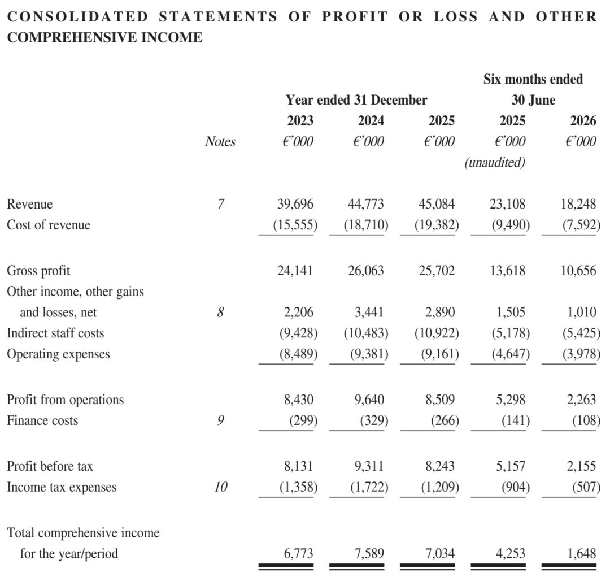
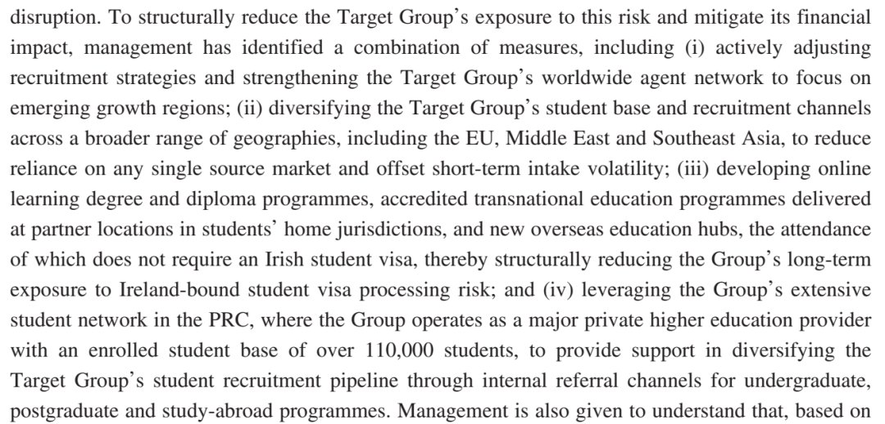

观察民办教育的突围与创变，需要一个能够跳出行业情绪的位置。元认知——对自身认知过程的觉察与校准——提供这样一个位置：它不急着给民办院校的每一步做法贴上对错标签，而是先追问，这些做法建立在什么判断之上，判断所依据的现实是否已经改变，以及当现实改变时，院校是否意识到自己仍在沿用旧的坐标。
2026 年 10 月 30 日，中国春来教育集团披露了收购都柏林商学院（Dublin Business School，DBS）的详细通函。这笔约 10 亿港元的交易已于 10 月 27 日交割。把这份通函放进民办教育近两年的集体议程里看，它不只是一桩海外并购，更是一次关于"民办院校究竟靠什么突围"的公开答卷。
一、先看认知坐标：行业焦虑从何而来
过去两年，民办高等教育面对的是一组同时发生的挤压：高考报名人数波动、公办院校千人级扩招、家庭教育消费趋于理性、分类管理改革关闭资本套利通道。行业文章反复出现缺额、降分、裁员、关停这些词，情绪浓度不断升高。情绪本身是一种认知信号，它提示压力真实存在；但情绪也会遮蔽判断，让院校把"活下去"压缩成"招满人"。
元认知的第一步，是把"我们正在做什么"和"我们为什么认为该这样做"分开。近一年民办院校的应对，大致可归为四类：压缩成本、砍掉同质化专业；借用外部治理经验补齐品牌与质量短板；把中外合作办学从选修项目提升为战略必答题；以及通过产教融合把专业锚定到区域产业链。这些做法方向各异，背后却有一个共同问题——它们大多在回答"如何在现有框架里继续办学"，很少回答"框架本身是否需要重画"。
二、一笔交易里的三重事实
春来收购 DBS，给出的不是单一答案，而是三层可以逐层核验的事实。
第一层是资产本身。按交易双方公告，DBS 每年服务约 9,000 名学生，来自 80 多个国家，课程覆盖商业、计算机、法律、心理学等领域；春来以 1.275 亿美元、约 10 亿港元取得运营公司全部股权及相关品牌知识产权。通函披露，目标集团 2025 年净利润约 703 万欧元，按通函估值部分采用的汇率粗算，对价约相当于这一年净利润的 15.6 倍。这意味着，收购发生之前，DBS 已经是一门有收入、有利润、有国际生源的生意。

第二层是能力的可复用性。DBS 已经在为集团之外的院校提供课程与教学支持：其 2026 年年度质量报告列出与马来西亚 Kolej Poly-Tech MARA 开展会计与金融本科课程、与 EU 商学院慕尼黑校区开展商科本科和工商管理硕士课程。与南京财经大学的安排则具体到学分——符合条件、取得至少 141 个中国学分的学生，可进入 DBS 会计与金融荣誉学士课程最后一年；报告称两校已完成课程和学分对应，衔接没有缺口。春来旗下院校并不缺少签约合作的经验，安阳学院与新西兰科技教育学院从 2022 年签署合作备忘录，到 2026 年 4 月签署共建数智工程国际学院的协议，展示的正是合作可以逐步深化的路径。持有一家外方院校之后，新股东能够参与决定给哪些项目投钱、为课程开发配置多少人手，也能通过整家学校的经营取得后续合作形成的收益。

第三层是风险与约束。通函明确，DBS 继续独立运营，课程与学术事项仍须履行校内程序，并符合爱尔兰质量与资格局等要求；管理层同时列出，针对印度等生源市场签证审理延长带来的影响，将发展在学生所在国合作院校授课的、经过认证的跨境教育课程，以降低对赴爱尔兰签证办理的依赖。财务数据也提示另一面：2025 年目标集团盈利约 703 万欧元，经营现金却净流出约 781 万欧元，学费相关合同负债减少是主要影响项；春来还为收购安排了人民币 4.494 亿元、期限十年的银行融资。账面盈利与可支配现金之间，并不画等号。
三、综合观察：民办院校当下在做什么
把这笔交易与同一时期的其他动向放在一起，民办院校的突围路径呈现出更完整的图景。
其一，从规模扩张转向存量经营。多所民办院校合并重叠部门、废除补丁式管控规则、砍掉常年缺额的同质化专业，把有限资源投向特色赛道。这是必要的减法，但它解决的是成本结构，尚未回答收入结构。
其二，从外部借力转向治理补课。郑州西亚斯学院聘请郑强担任战略发展专家委员会主席、首席专家、教育总督，把手握战略规划、学科改革、教学质量督导的权力交给外部专业力量。这类安排试图补齐民办院校在品牌、治理与资源上的短板，本质是对自身能力边界的一次诚实确认。
其三，从项目合作转向资格与通道建设。正规中外合作办学拥有独立招生代码、学费单独备案，能够开辟增量生源、重塑营收结构；但教育部执行"东严西宽"的审批策略，窗口期有限。公办院校同步加码中外合作项目形成双引流，意味着这条赛道不再只属于民办。
其四，从挂牌签约走向权益设计。春来的做法把"合作"推进到"持有"：签约获得的是协议约定的资源与权益，持股获得的则是对后续经营选择的持续决定权，以及对原有业务收益的请求权。这一步跨出去之后，院校的角色从项目参与方变成了资产持有方。
四、元认知校准：三个需要重画的坐标
如果用元认知的视角给上述做法做一次校准，有三个坐标值得重新审视。
第一，从招生规模转向可复用能力。学生数量是结果，能力资产是原因。当外方课程、教学支持、学分衔接方案可以被反复用于多所院校，院校创造的价值就不再局限于自己招到的那一批学生。判断一笔投入是否值得，关键要看它形成的能力能否被再次使用。
第二，从项目合作转向控制权设计。长期合作协议或项目合资同样可以约定共同投入；控股进一步提供的，是对后续经营选择的决定权。春来能够为多批项目建设外方教学能力，前提是它通过公司治理作出资金安排。院校需要问自己：在每一次合作里，我们购买的到底是访问权，还是决定权？
第三，从学费依赖转向多元现金流。春来的案例提供了一个具体提醒——2025 年目标集团盈利 703 万欧元，经营现金却净流出 781 万欧元，收购还伴随十年期融资。原有业务能够持续产生多少现金、扣除必要投入后能否支持融资偿付，直接影响实际回报。把"账面利润"当成"可自由调度的钱"，是院校经营中最常见的认知偏差之一。
五、趋势判断：未来三到五年会发生什么
基于上述事实与做法，可以给出几条有边界的趋势判断。
跨境交付将成为常态，而不是备份方案。在学生所在国合作院校授课、经过认证的跨境课程，正在从"签证延迟时的应急选项"转向常规产品设计。春来通函把这一条写进管理层措施，DBS 已有的境外合作提供了执行基础。对国内院校而言，这意味着国际教育的竞争焦点会从"送出去多少人"转向"能否把课程与教学能力稳定地交付在本地"。
外方院校会成为可交易资产，中国民办教育从"引进来"走向"走出去持有"。春来收购 DBS 不是一个孤立事件，它说明具备课程、团队和运行经验的外方机构可以被定价、被收购、被纳入集团报表。未来三到五年，具备跨域运营能力的民办教育集团会更主动地配置海外资产，而不再满足于签一份合作协议。
监管与质量门槛会同步抬高。通函反复出现的 QQI 等质量框架提示，跨境课程能否开设、学生如何录取，由相应的学术和监管程序决定。持有学校不等于可以绕过规则；相反，持有之后需要承担更完整的合规责任。窗口期收窄的另一面，是质量与合规能力成为真正的壁垒。
行业分化会沿着"资产化能力"展开。能够把课程、师资、质量体系沉淀为可复用资产的院校，会在存量竞争里获得新的收入来源；仍停留在招生与学费单一循环的院校，则会在成本与生源的双重挤压中继续收缩。这不是规模大小的分化，而是认知框架的分化。
结语：观察者看到的是选择，不是宿命
回到元认知这个观察位置。它并不承诺更好的结果，只是让选择变得更清醒：当行业都在谈"寒冬"时，先确认自己使用的到底是季节判断，还是框架判断；当同行都在签约合作时，先确认自己想要的是项目入口，还是经营决定权；当报表显示盈利时，先确认那笔钱能否真正被调度。
民办教育的突围与创变，最终发生在认知层。春来用 10 亿港元给出的答案，未必适合每一所院校；但它把一个问题摆到了桌面上——当外部环境改变时，院校有没有能力觉察到自己仍在用旧的坐标做判断。这个问题，比任何一项具体策略都更值得回答。